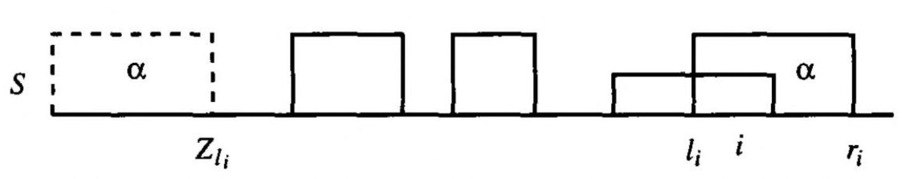
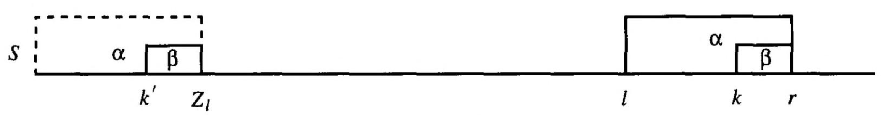
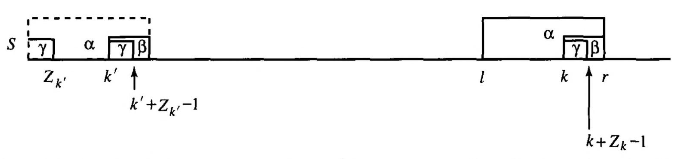
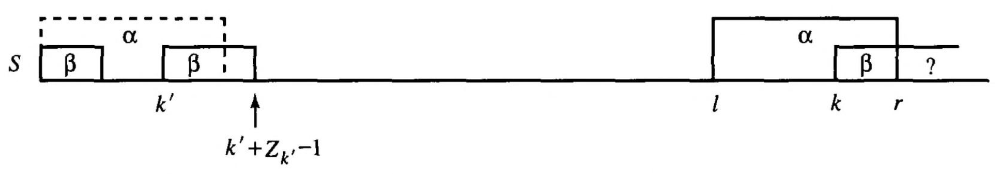

The Z-Algorithm
String Preprocessing
A few extact-matching algorithms rely on a fundamental preprocessing step to compute the maximum number of allowable skips in string-to-substring comparisons. Text preprocessing is usually done to only the query string, making it ideal for applications where the query is smaller than the text itself. Such is the case when trying to align short reads to a significantly larger reference genome.
Algorithms that preprocess only the query string are termed online while those that preprocess the larger text are offline. Some examples of online algorithms include:
- Knuth-Morris-Pratt
- Boyer-Moore
Online algorithms preprocess the query string using the Z function. Let’s look at how the algorithm works.
Terminology
In pattern matching, we are interested in two separate strings where one string is ‘smaller’ than the other. The context of string size is limited to the number of characters used in building the string. I will be using notation for representing such string.
- Reference string (S)
- The references string or the larger of the two strings.
- Query string (T)
- The query string or the shorter of the two strings.
- k
- Index position of the first character of a substring, relative to the start of the reference string. Given \(S = \text{abracadabra}\), the value of \(k\) for substring \(\text{adab}\) is 6.
- |S|
-
The length of the reference string. This can be generalized to other stings as well. Any variable enclosed between pipes (
|) refers to the length of that string. - S[i:j]
- A subset of the reference string that stars at index i and ends at index j, inclusive. Also generalizable to other strings. For example, if \(S = \text{abracadabra}\) then S[6:9] is just the substring \(\text{adab}\).
The Z-box
Given a string S and a position i > 1 let \(Z_i(S)\) be the length of the longest substring of S that starts at i and matches a prefix of S.
In other words, \(Z_i(S)\) is the length of the longest prefix of S[i..|S|] that matches a prefix of S. For example, when \(S = \text{aabcaabxaaz}\) then
\[ \begin{aligned} Z_5(S) = 3 \\ Z_6(S) = 1 \\ Z_7(S) = 0 \\ Z_8(S) = 0 \\ Z_9(S) = 2 \\ \end{aligned} \]
The length of S can be represented as a 1-dimensional line as seen in the figure below. Each span of each z-box should be within the line.

Each solid box represents a substring of S that matches a prefix of S and that starts between positions 2 and i. The right-most end of any Z-box is denoted as \(r_i\) and the left-most end is denoted as \(l_i\). The substring that occurs between \(r_i\) and \(l_i\) is labelled as substring \(α\).
Computing \(Z_i\)
Given a string S with length |S|, we compute \(Z_i\), \(r_i\), and \(l_i\) for each successive position i, starting from \(i=2\). An empty array of length |S| will be initialized to store each compute value of \(Z_i\).
For any iteration i, the algorithm would only need to update the values of \(r_i\) and \(l_i\) based on the values for the previous iteration j. So for any iteration i where a new Z-box is discovered, the variable r will be incremeted to the end of the Z-box and variable l is set to the current value of i. Given:
\(S = \text{CAGTCAGCA}\)
We compute for the Z values of the substrings highlighted in blue:
C A G T C A G C A
C A G T C A G C A
C A G T C A G C A
C A G T C A G C A
C A G T C A G C A
C A G T C A G C A
We first compute for Z at the second index of the string (\(Z_2\)). Since this is the first iteration, we explicitly compare the characters of \(S[2..|S|]\) and \(S[1..|S|]\) from left to right, keeping count of the number of characters that exactly match:
C A G T C A G C A
C A G T C A G C A
C A G T C A G C A
C A G T C A G C A
C A G T C A G C A
C A G T C A G C A
The first three iterations show that there are not common characters between the \(\text{substring}_i\) and the prefix of S, hence the compute a \(Z_i = 0\). We continue with the next few iterations.
C A G T C A G C A
C A G T C A G C A
C A G T C A G C A
C A G T C A G C A
C A G T C A G C A
C A G T C A G C A
At \(i = 5\), we see that there is a common substring of length 3 indicated that we found an occurrence of a new z-box. We denote the start of the substring as k and update the values of r and l as follows:
\[ k = 5; z_k = 3 \] \[ r = k + z_k - 1 \] \[ l = k \]
We visualize the current z-box as a range within string S bound between indices l and r which in our case is a substring that starts at index 5 and ends at index 7. We represent this substring as \(Z[l..r]\) and is color in red below:
1 2 3 4 5 6 7 8 9
Since we know that \(S[5..7]\) occurs at \(S[1..3]\), we can also be certain that \(S[6..7]\) is found at \(S[2..3]\). The same can be said for \(S[7]\) and \(S[3]\). This subtlety allows us to update the values of l and r based on previously computed values of Z. We update these variables based on the following conditions:
- If \(k > r\), explicitly compare characters starting at position k to the character starting at position 1 of string S until a mistmatch is found and assign the count to \(Z_k\). If \(Z_k > 0\), set \(r = k + Z_k -1\) and \(l = k\). Otherwise, set \(r = 0\) and \(l = 0\).

If \(k \le r\), compute for k’ as \(k' = k - l + 1\) and the length of S[k..r] (denoted as \(\beta\)). Then following the subconditions:
- If \(Z_{k'} \lt |β|\), set \(Z_k = Z_{k'}\) and leave the values of l and r unchanged.

The longest string starting at k’ that matches a prefix of S is shorter than |\(β\)|. In this case, \(Z_k = Z_{k'}\). - If \(Z_{k'} \ge |β|\), start comparing the characters starting at positions \(r + 1\) and \(|β|+1\) of S until a mismatch occurs, storing the index where the first mistmatch occurred at variable q. Set \(Z_k = q - k\), \(r = q - 1\) and \(l = k\).

The longest string starting at k’ that matches a prefix of S is at least |\(β\)|.
Continuing our example, we proceed to iteration 6 (\(k=6\)) and follow the condition provided. Since \(k \le r\) (6 < 7), we compute k’ and the length of \(β\) as 2 and 3, respectively. We backtrack to the Z-value at index k’ which is seen to be \(Z_2 = 0\). This information points us to the first subcondition since \(0 < 3\). Hence we set \(Z_6 = Z_2 = 0\) and keep l and r unchanged.
Following the next iteration would point us to the second subcondition where we have to explicitly compare substrings starting from indices 4 and 8 of string S. This immediately leads to a mismatch hence we set \(q = 0\) and update the variables \(Z_k = 8 - 70\), \(r = 8-1 = 7\), and \(l=7\)
Implementation
def z(s):
"""Use Z-algorithm to preprocess a given string."""
L = len(s)
Z = [L] + [0] * L
for i in range(1, L):
if s[i] == s[i-1]:
Z[1] += 1
else:
break
r, l = 0, 0
if Z[1] > 0:
r, l = Z[1], 1
for k in range(2, L):
assert Z[k] == 0
if k > r:
for i in range(k, len(s)):
if s[i] == s[i-k]:
Z[k] += 1
else:
break
r, l = k + Z[k] - 1, k
else:
n_beta = r - k + 1
Zkp = Z[k-l]
if n_beta > Zkp:
Z[k] = Zkp
else:
n_match = 0
for i in range(r+1, len(s)):
if s[i ] == s[i-k]:
n_match += 1
else:
break
l, r = k, r + n_match
Z[k] = r - k + 1
return Z- 1
- Initialize array for storing Z-values.
- 2
- Naive comparison for first substring.
- 3
- Initialize bounds of the Z-box.
- 4
- Case 1.
- 5
- Case 2.
- 6
- Case 2a.
- 7
- Case 2b.